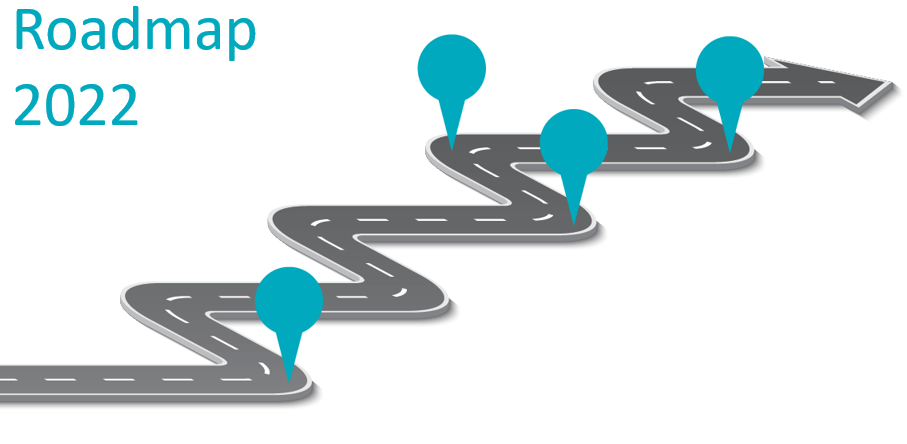

Intelligent Synchronizer mechanism
New synchronization features that allows to configure multiple Data Sources in the same synchronizer to automatically choose the best one in terms of some defined parameters.
Synchronization Retry mechanism
DHuS keeps memory of the products whose synchronization failed and is able to automatically retry their retrieval according to defined rules.
Metrics
Make DHuS able to report the performances of the synchronization process
Metrics available globally for the DHuS or aggregated by Data Source, Synchronizer, Product Type, etc.
Metrics exposed on OData v4
Metrics collected can be persistent or stored in memory.
Security Updates
Updates of most of the critical DHuS libraries to guarantee Security compliance and increase the system security level.